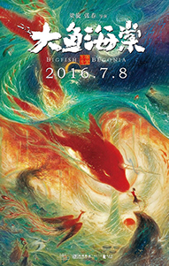

The creation of animation works has developed as a form of filmmaking
3.2
css
style by css
Animation, also called cel animation or hand-drawn animation, was the process used for most animated films of the 20th century. The individual frames of a traditionally animated film are photographs of drawings, first drawn on paper.To create the illusion of movement, each drawing differs slightly from the one before it.
In the 19th century, the phenakistoscope (1832), zoetrope (1834) and praxinoscope (1877) were introduced. A thaumatrope (1824) is a simple toy with a small disk with different pictures on each side.The phenakistoscope was invented simultaneously by Belgian Joseph Plateau and Austrian Simon von Stampfer in 1831.
Created by physically manipulating real-world objects and photographing them one frame of film at a time to create the illusion of movement.
beauty of animation
Big Fish & Begonia
Here is a world within our world, yet unseen by any human, and the beings here control time and tide and the changing of the seasons. On the day Chun turns sixteen, she is transformed into a dolphin to explore the human world. She is rescued from a vortex by a human boy at the cost of his own life. Chun is so moved by the boy's kindness and courage that she decides to give him life again. But to do this, she must protect the boy's soul, a tiny fish, and nurture it to grow. Through adventure and sacrifice, love grows, yet now she must release him back to the sea, back to life in the human world.
It seems to be about magical children who can transform into flying sea creatures. We say “seems to”because there isn’t a word of English in this trailer. Thankfully, you don’t need to know no languages to see just how darn pretty this here trailer is.
We don’t know a lot about this upcoming Chinese animated film, but wow does it look pretty. It seems very unlikely that the film will get a Western release, but at least we get to see these downright beautiful.
Animation of China
0
one two
three four five
Chinese animated film 2016.7.8
It's wonderful to see something truly beautiful coming from industry of China.